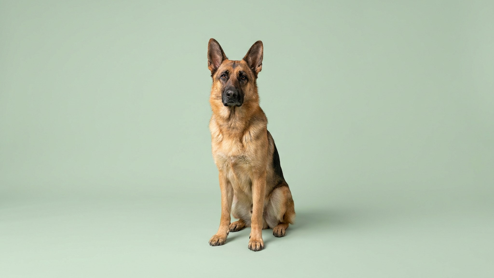

ВЕО выглядит как немецкая овчарка — только крупнее, массивнее и заметно спокойнее на нервах. Порода создавалась в СССР специально для службы в наших климатических условиях: от -30 до +40, долгие дежурства, жёсткие задачи. Если вы выбираете между ВЕО и немецкой или уже взяли щенка и не знаете, чего ждать — ниже разбор по делу.
🐾 У вас восточноевропейская овчарка?
AnimaLife соберёт уход под породу: к каким болезням есть склонность, что проверять по возрасту, чем кормить и когда пора к врачу. Бесплатно, прямо в мессенджере.
Собрать план ухода → Собрать в MAX →
У вас iPhone? AnimaLife есть в App Store
ВЕО — самостоятельная порода, выведенная в 1930–1950-х годах на базе немецкой овчарки путём отбора и скрещивания с крупными породами. Ключевые отличия:
ВЕО — интеллектуальная рабочая собака. Она не истеричная и не трусливая, но требует уважения. Без чёткой иерархии начинает управлять хозяином сама — спокойно, но настойчиво. Хорошо ладит с детьми семьи, к чужим настороженна. Агрессия без причины не характерна для породы — если проявляется, это сигнал к работе с кинологом, а не норма.
Ранняя социализация обязательна: щенка нужно знакомить с людьми, транспортом, звуками и другими животными с 8 до 16 недель. ВЕО, выросшая в изоляции, становится неуправляемо подозрительной.
Взрослой ВЕО нужно минимум 1,5–2 часа активности в день: прогулки, апортировка, обучение. Мозговая нагрузка важна не меньше физической — без задач порода скучает и начинает «развлекаться» сама. Щенку до года физическую нагрузку дозируют: долгие пробежки и прыжки вредят формирующимся суставам. Акцент — на послушание, игры, социализацию.
Воспитание строится на последовательности и уважении, не на давлении. Жёсткие методы дают обратный результат — ВЕО закрывается или начинает давить в ответ. Базовый курс ОКД с кинологом — не роскошь, а необходимость для этой породы.
Двойная шерсть линяет дважды в год интенсивно и слегка — круглый год. В период линьки вычёсывание ежедневное, в остальное время — 2–3 раза в неделю. Купание — по необходимости, не чаще раза в 1,5–2 месяца.
Крупные собаки с тяжёлым костяком уязвимы для суставов. Профилактика простая: контроль веса (перекорм — враг номер один), правильная нагрузка без перегрузок в щенячестве, сон на ортопедической подстилке, а не на холодном полу. При любых изменениях в походке или активности — к ветеринару, не ждать.
Порода подходит опытному владельцу, готовому заниматься собакой каждый день. Дом с двором — идеально, но квартира возможна при достаточных прогулках. ВЕО не подойдёт тем, кто хочет собаку «на диване»: без работы и взаимодействия порода деградирует.
🐾 Ваш питомец — восточноевропейская овчарка?
Заведите профиль в AnimaLife: приложение запомнит породу, возраст и вес и будет подсказывать по уходу именно для неё. Вопросы AI-ветеринару — круглосуточно и бесплатно.
Завести профиль → Завести в MAX →
У вас iPhone? AnimaLife есть в App Store
🐾 Понравился разбор?
Подпишитесь на канал — каждый день разбираем по одному тревожному симптому у кошек и собак: что в пределах нормы, а когда пора к врачу. Подпишитесь, чтобы не пропустить разбор, который может спасти здоровье вашего питомца.
Материал носит информационный характер и не заменяет очную консультацию ветеринара.